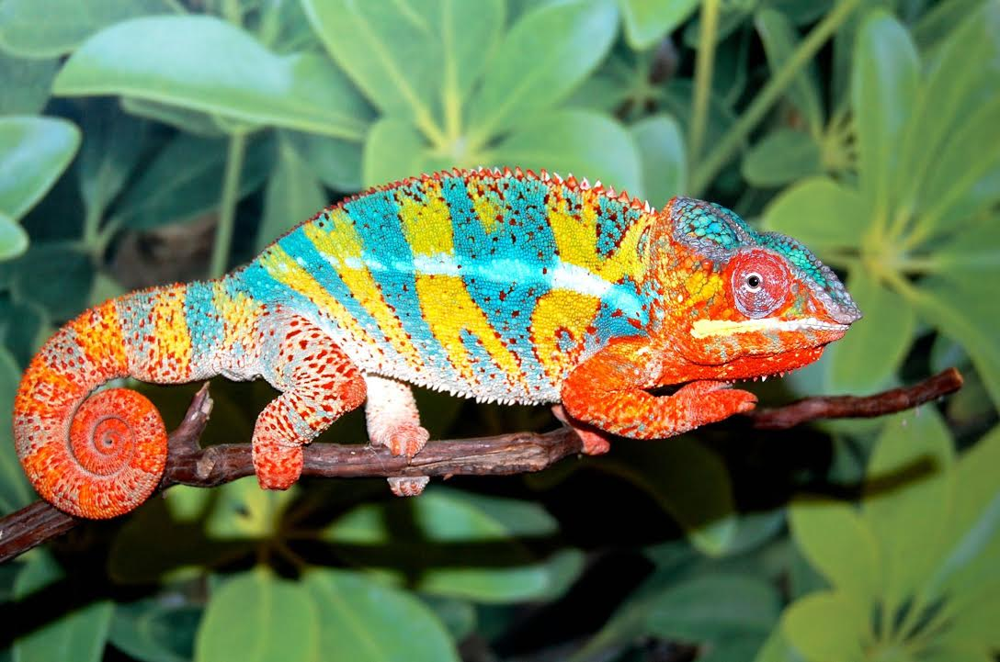

Ambilobe Panther Chameleon
Kingdom: Animalia
Phylum: Chordata
Subphylum: Vertebrata
Class: Reptilia
Family: Chamaeleonidae
Order: Squamata
Suborder: Lacertilia
Infraorder: Iguana
Subkingdom: Bilateria
Infra kingdom: Deuterostom
Infra phylum: Gnathostomata
Superclass: Tetrpoda
Genera & Species: Within the two subfamilies are nine genera and 171 species
Chameleons are reptiles that are found in Africa, Asia, and parts of Southern Europe and also has been introduced to North America. Almost half of the world's chameleon species live on the island of Madagascar There are known to be more than 160 species of the chameleon. The scientific name for the chameleon is Chamaeleonidae. They are know for their ability to change colors.Chameleons change color to communicate, a response to temperature, light, mood, and to protect themselves from predators.The chameleon have a lifespan of 5-9 years. This animal is almost able to see 360-degrees and see two things at once. The diet for the chameleon are insects, snails, spiders, lizards, birds, flowers, berries, and fruits.Most chameleons have a prehensile tail that they use to wrap around tree branches.To catch their prey, they creep along very slowly. Once the prey is in reach, their suction cup tongue shoots out and sticks to the insect. Their hands and feet have large toes that help them cling to branches. Chameleons are loners. In fact, most of the time females don't want males to even come near them. Small chameleons lay typically 4 to 5 eggs while larger chameleons lay up to 80-100 eggs.